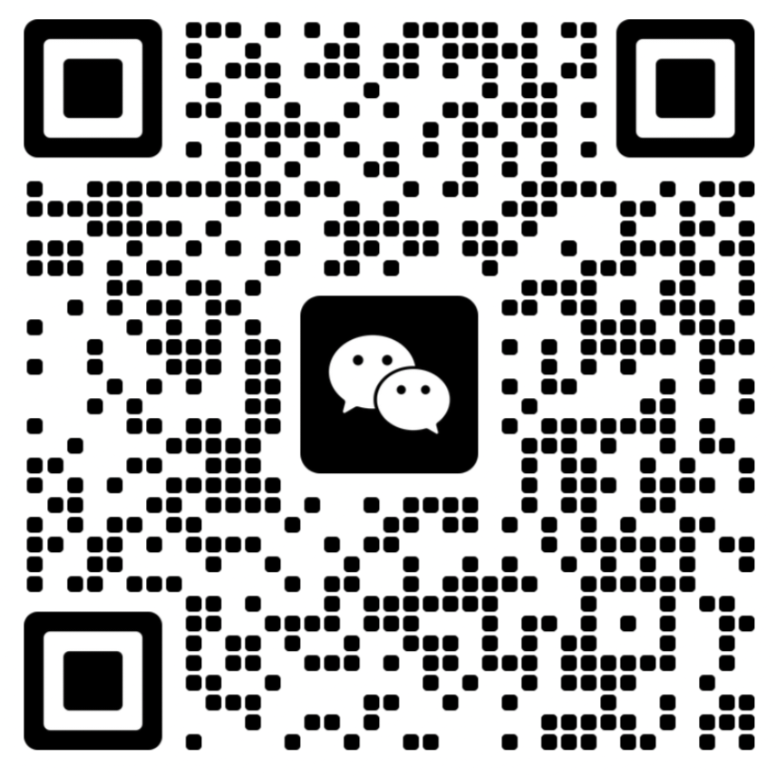
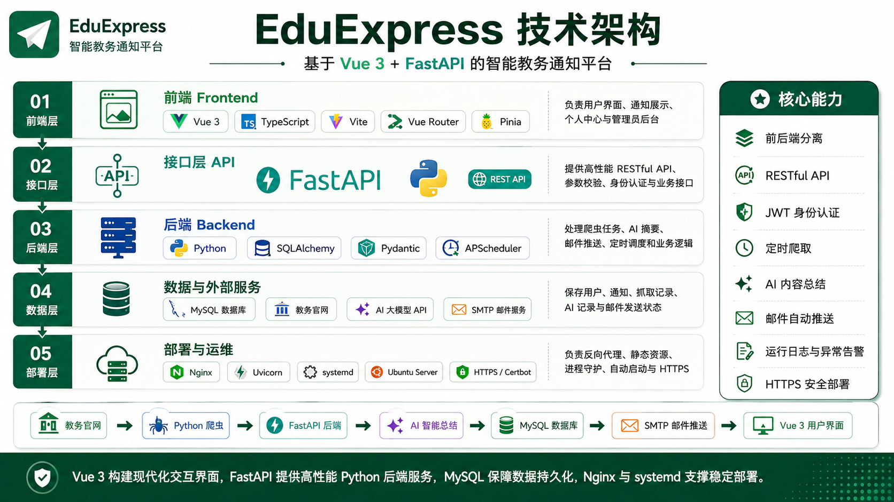

|
 微信二维码 曾致力 |
高等数学 A1（96）、高等数学 A2（98）、概率论与数理统计 B（93）、线性代数 A（88）、离散数学（87）、算法设计与分析（97）、人工智能导论（90）、数据结构（87）、计算机组成原理（90）、自然语言处理（97）
Python、C++、Java、SQL、Git、Linux、Markdown、LaTeX
| 时间 | 级别 | 项目名称 | 角色 |
| 2026.05 - 2028.05 | 省级 | 面向交通状态观测盲区的时空图外推方法及平台构建 | 主持 |
| 2025.05 - 2026.05 | 校级 | 基于逆强化学习的快递员取件路线预测和时间预测 | 主持 |
| 2024.09 - 2025.09 | 校级 | 面向大型路网流量预测的可扩展时空图深度模型 | 参与 |
EduExpress 智能教务通知平台面向高校师生的教务通知订阅系统。系统每日定时抓取公开教务通知，识别新增内容，调用大模型生成结构化 AI 摘要，并通过邮件自动推送给已验证的订阅用户。 技术栈：Vue 3、Vite、TypeScript、Python、FastAPI、SQLAlchemy、MySQL、APScheduler、Ubuntu |
 |
| 年份 | 竞赛名称 | 类型 | 奖项 / 排名 |
| 2025 | 全国大学生职业规划大赛 | 个人赛 | 国家级三等奖 |
| 2025 | 全国大学生数学建模竞赛 | 个人赛 | 省级一等奖 |
| 2025 | 全国大学生数学竞赛 | 个人赛 | 省级一等奖 |
| 2025 | 中国国际大学生创新大赛 | 核心成员 | 省级二等奖 |
| 2025 | 蓝桥杯全国大学生软件和信息技术大赛 | 个人赛 | 省级三等奖 |
| 2025 | 书生大模型公式识别 SFT/RL 挑战赛 | 个人赛 | 排名 45 / 107（获奖公示） |